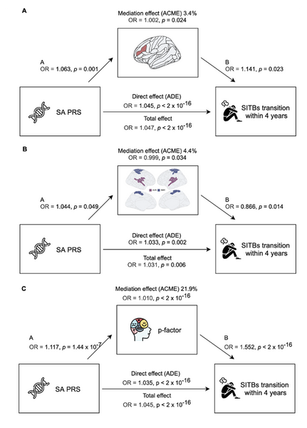
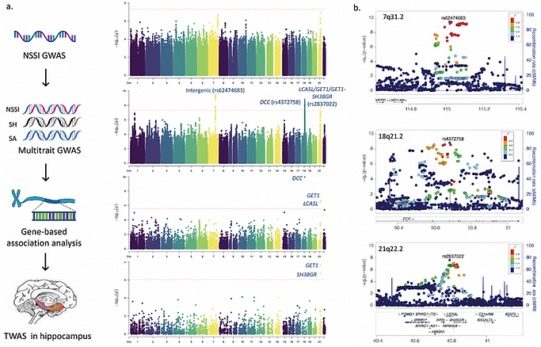
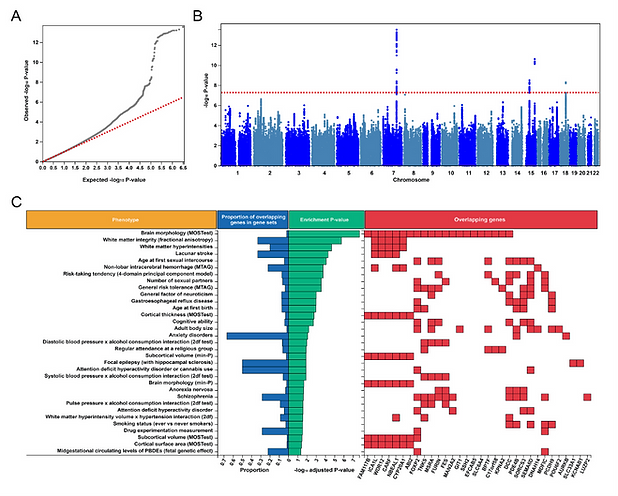
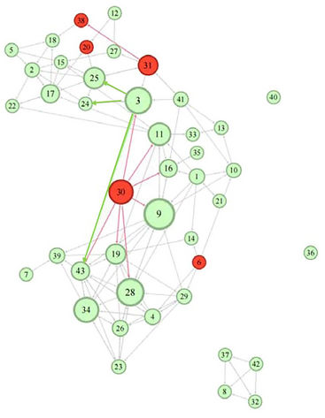
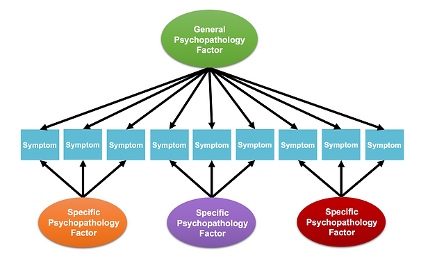
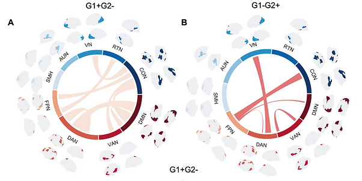
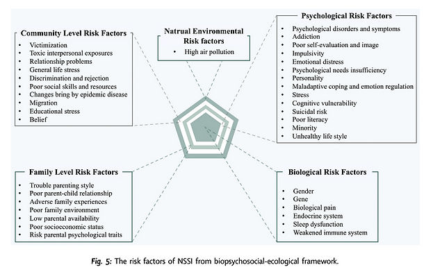
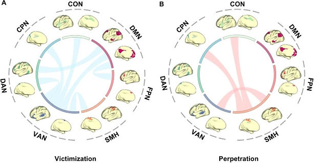
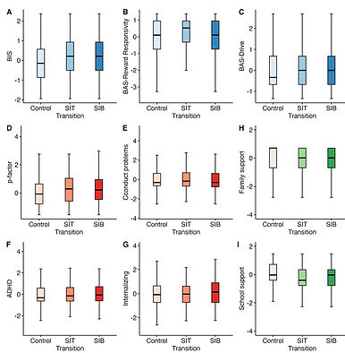
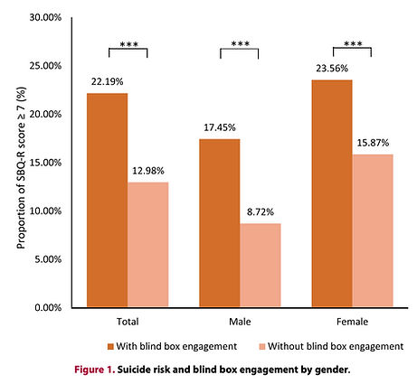

British Journal of Psychiatry · August 2026
Genetic and Neurobiological Mechanisms Underlying Transition in Self-Injury Thoughts and Behaviors During Adolescence
Genetic risk and changes in brain structure and function were associated with changes in self-injury thoughts and behaviors during adolescence.
Authors in the lab directory · Xue Wen, Shihui Wang, Runsen Chen
Read the study summary
Adolescence is a critical period for brain development and the emergence of self-injury thoughts and behaviors (SITBs), yet the genetic and neurobiological mechanisms underlying SITBs transition remain unclear. This study examined longitudinal data from a large cohort to explore how genetic predispositions relate to changes in SITBs during adolescence, and whether brain and clinical factors mediate this relationship. Findings revealed that genetic risk for self-harm and suicide-related behaviors was significantly associated with increased likelihood of SITBs transition, especially during early to mid-adolescence. Neuroimaging data indicated structural and functional brain alterations among at-risk youth, and mediation analyses suggested that certain brain features and general psychopathology partially explain how genetic risk translates into behavioral outcomes. These results provide valuable insights for integrating genetic, neurobiological, and clinical indicators to improve early identification and intervention strategies for adolescent suicide risk.
Article details

Cell Reports Medicine · 2025
Multitrait genome-wide association analysis of non-suicidal self-injury and the polygenetic effects on child psychopathology and brain structures
An analysis combining genetic data across related outcomes identified three regions associated with non-suicidal self-injury.
Read the study summary
We employed multi-trait genome-wide association analysis (MTAG) that jointly modelled genetic signals for self-harm, suicide attempt and non-suicidal self-injury (NSSI), thereby overcoming the limited power of prior single-phenotype studies. MTAG revealed three genome-wide significant susceptibility loci for NSSI: DCC on 18q21.2 (axon guidance), an intergenic variant at 7q31.2 previously linked to suicide attempt, and the GET1/SH3BGR region on 21q22.2 involved in protein transport and signalling. Gene- and brain-transcriptome–level analyses showed that elevated hippocampal expression of GET1/SH3BGR is associated with higher NSSI risk. Fine-mapping prioritised two likely causal variants—SH3BGR rs4281987 (posterior probability ≈ 83%) and GET1 rs2837022 (≈ 68%). Pathway enrichment implicated Notch signalling, neurodevelopment, glutamatergic transmission, protein homeostasis, synaptic signalling and cognition, providing fresh insight into the biological mechanisms underlying NSSI.
Article details

Molecular Psychiatry · 2025
Genetic approach uncovering the pathways between childhood maltreatment and suicide attempt
Genetic analyses linked childhood maltreatment with suicide attempts and identified several possible pathways through mental health symptoms.
Read the study summary
We conducted a two-sample Mendelian randomization study using GWAS data for childhood maltreatment (n = 185,414) and suicide attempt (29,782 cases; 519,961 controls). Genetically proxied maltreatment showed a strong causal effect on suicide attempt (OR = 3.40, 95% CI = 2.34–4.96, P = 1.3 × 10⁻¹⁰). We then carried out a two-step MR mediation analysis of 58 candidate traits and identified 11 significant mediators spanning neurobiological, psychopathological, and behavioral domains, with psychopathological factors explaining 10.4 %–50.2 % of the total effect. These findings confirm a causal pathway from childhood maltreatment to suicide attempt and highlight modifiable psychopathological mechanisms for targeted prevention.
Article details

Journal of Youth and Adolescence · April 2025
Understanding Social Influence of Non-Suicidal Self-Injury: The Interplay of Peer Networks and Adolescent Behavior
Adolescents with more friends who self-injured were more likely to report self-injury themselves.
Read the study summary
This study examined both the independent and interactive effects of the number of friends engaging in NSSI, the number of claiming friends, and the extent of bridging different peer groups on adolescents’ NSSI behaviors within classroom-based social networks. The sample included 9581 Chinese adolescents (44.6% girls, Mage = 13.72, SD = 1.87) from 221 classroom-based friendship networks, comprising 4248 early adolescents and 5333 middle-to-late adolescents. Results revealed that adolescents with more friends engaging in NSSI faced a higher risk of engaging in NSSI themselves; however, this risk decreased for adolescents with more claiming friends, irrespective of age. Adolescents who acted as bridges between different peer groups and had an above-average number of claiming friends were more likely to engage in NSSI, but this was only the case in early adolescence. These findings suggest NSSI can spread through friendship networks, with social connections influencing how likely adolescents are to be affected. Incorporating social network assessments into mental health screenings might facilitate early identification and prevention of NSSI among youth.
Article details

European Psychiatry · March 2024
The p factor outweighs the specific internalizing factor in predicting recurrences of adolescent depression
A broad measure of mental health symptoms predicted depression recurrence over two years among adolescents in remission.
Read the study summary
This study explored how well the general psychopathology factor (p) and the specific internalizing factor predict depression recurrence in adolescents over two years. Using data from 255 remitted depressed adolescents and 255 matched healthy controls, we found that the p factor not only distinguished between remitted and healthy adolescents but also effectively predicted future depression relapse—unlike the internalizing factor, which could only differentiate the two groups at baseline. The p factor also showed a significant decline in those who remained in remission, indicating its sensitivity to long-term recovery. These findings suggest that broad-spectrum monitoring of psychopathological symptoms, rather than focusing solely on internalizing issues, is crucial for preventing adolescent depression relapse.
Article details
Acta Psychiatrica Scandinavica · January, 2024
Can digital self-harm relate to suicidal thoughts and behaviors beyond physical self-harm?
Digital self-harm was associated with suicidal thoughts and behaviors even after accounting for physical self-harm.
Read the study summary
Digital self-harm (DiSH) is a recently identified self-harm distinct from physical self-harm (PSH, also known as non-suicidal self-injury, NSSI). Although prior research has shown that DiSH was associated with suicidal thoughts and behaviors (STBs), it was still unclear whether DiSH has a unique association with STBs after controlling for PSH. A cross-sectional survey was conducted on Chinese college students. Our findings suggest that DiSH has a unique association with the risks of STBs beyond PSH. Early identification and intervention for DiSH are crucial, even for individuals who already engage in PSH.
Article details

Molecular Psychiatry · January, 2024
Brain structural and functional signatures of multi-generational family history of suicidal behaviors in preadolescent children
A history of suicidal behavior across generations was associated with higher risk and differences in brain measures in preadolescents.
Authors in the lab directory · Xue Wen, Diyang Qu, Dongyu Liu, Xuan Zhang, Runsen Chen
Related projects · Cognitive and developmental neuroscience of suicide and non-suicidal self-injury
Read the study summary
Parent-child transmission of suicidal behavior is known, yet three-generation effects are understudied. Using four-year longitudinal data from 9,653 pre-adolescents in the ABCD Study, this study examined behavioural and neural correlates of multi-generational family history of suicide (FHoS). Multi-generational FHoS predicted higher risks of suicide ideation, suicide attempt and broad problematic behaviours; the latter partially mediated the FHoS–suicidality link. Neuroimaging revealed reduced cortical thickness/area in the superior temporal gyrus, pre-/post-central and posterior parietal cortices, cingulate cortex and planum temporale, alongside disrupted connectivity within the default-mode, attention (ventral & dorsal), fronto-parietal and cingulo-opercular networks. These population-level findings provide the first longitudinal evidence that multi-generational FHoS confers behavioural and neurodevelopmental vulnerability in offspring, underscoring the need for early, family-focused suicide-prevention strategies.
Article details

The Lancet Regional Health–Western Pacific · August 2023
Non-suicidal self-injury in Chinese population: a scoping review of prevalence, method, risk factors and preventive interventions
The review found many studies of risk factors for self-injury in China and only 12 empirical studies of prevention or intervention.
Related projects · Cognitive and developmental neuroscience of suicide and non-suicidal self-injury
Read the study summary
Non-suicidal self-injury behavior (NSSI) is a serious public health concern that requires immediate attention. Despite the high prevalence of NSSI among the Chinese population, there is a significant gap in research on the comprehensive picture of this field. Therefore, a scoping review was conducted to investigate the prevalence, methods, risk factors, and preventive intervention programs related to NSSI in China. The review found that the estimated lifetime prevalence of NSSI among Chinese youth population is alarmingly high at 24.7% (N = 1,088,433). Common methods of NSSI include scratching, hitting, and biting. Additionally, the review synthesized 249 risk factors based on the biopsychosocial-ecological framework, highlighting the urgent need for intervention. However, only 12 empirical studies focus on NSSI prevention or intervention programs were included. These findings underscore the necessity for more clinical practices and larger studies to identify effective interventions and ultimately alleviate the burden of NSSI on the Chinese population.
Article details

BMC Medicine · April 2023
Associations of bullying perpetration and peer victimization subtypes with preadolescent's suicidality, non-suicidal self-injury, neurocognition, and brain development
Bullying and peer victimization were associated with self-injury, suicide risk, and differences in cognition and brain measures.
Related projects · Cognitive and developmental neuroscience of suicide and non-suicidal self-injury
Read the study summary
This study investigated how different forms of peer victimization and bullying perpetration affect the mental health, cognitive function, and brain development of preadolescents aged 10 to 13, using data from the ABCD Study®. The findings revealed that both general and subtype-specific bullying experiences (overt, relational, reputational) are linked to increased risks of suicidality and non-suicidal self-injury, as well as distinct patterns of cognitive performance and brain abnormalities. Notably, relational bullying showed some positive associations with executive function, while overt bullying was linked to poorer outcomes. Victimization was also associated with disruptions in key brain networks involved in attention and memory. These results underscore the need for targeted, subtype-specific interventions that address the broad psychological and neurobiological impact of bullying in preadolescents.
Article details

Nature Mental Health · January 2023
The transition trajectories of self-injurious thoughts and behaviours among children from a biopsychosocial perspective
Changes in self-injury were associated with brain and symptom measures. Family and school support were associated with lower risk.
Authors in the lab directory · Xue Wen, Diyang Qu, Xuan Zhang, Runsen Chen
Related projects · Cognitive and developmental neuroscience of suicide and non-suicidal self-injury
Read the study summary
Although self-injurious thoughts and behaviours (SITB) among children pose an imminent public health concern, the comprehensive understanding of SITB transitions remains unclear. Here we used the longitudinal data of 7,270 children from the Adolescent Brain and Cognitive DevelopmentSM Study (ABCD Study). We found that SITB transitions are linked to altered cortical areas of the dorsal lateral prefrontal cortex and the posterior cingulate cortex and altered functional connectivity between the default mode and attention networks. Additionally, high behaviour inhibition and general psychopathology (that is, p-factor) were identified as risk factors for SITB transitions, while the presence of robust family support and school support served as protective factors. Our study extends prior cross-sectional investigations by elucidating the temporal precedence of specific biopsychosocial factors, underscoring their potential predictive significance in SITB occurrence. Early identification of these factors holds great promise for targeted prevention, addressing the pressing public health concerns associated with SITB.
Article details

EClinicalMedicine · September 2022
Blind box over-engagement and suicide risk among adolescents and young adults: results of a large-scale survey
Buying randomized collectible boxes was associated with higher suicide risk in a survey of more than 73,000 college students.
Read the study summary
We investigated the link between blind box engagement—a form of randomized collectible toy purchase similar to gambling—and suicide risk among over 73,000 college students in Jilin Province, China. It found that blind box engagement was significantly associated with increased suicide risk in both males and females, even after controlling for factors like age, income, and substance use. Depression and anxiety were identified as mediators in this relationship. Further analysis within the blind box user group revealed that psychological tolerance (i.e., signs of addiction) increased suicide risk in both genders, while borrowing money for blind boxes was a risk factor for males. These findings suggest that blind box behavior, like gambling, may pose serious mental health risks for youth.
Article details